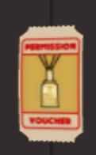
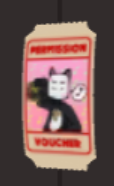
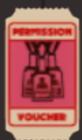
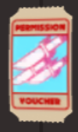
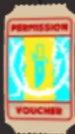

1. VIP Token ( 95R$ ) . VIP Token gives access to VIP Items ( Tradeable )

2. Radio Token ( 200R$ ). Gives access to use The Radio ( Tradeable )

3. MVP Token ( 300R$ ). Can be used for MVP Access ( Tradable )

4. Shotgun Token ( 399R$ ). Can be used to get Shotgun Knife Ablity ( Tradable )

5. Tesla Token ( 600R$ ). Can be used to get Tesla Knife Ability ( Tradable )
